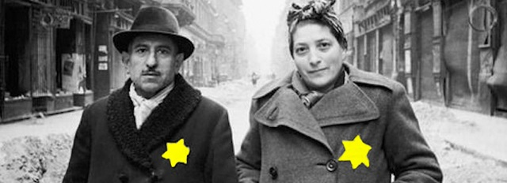

2017-09-06 08:00

Yesterday was a dark day for everyone except the white supremacist regime that currently runs this country. Almost a million young Dreamers – Americans in every sense except documentation – will be expelled with the stroke of a presidential pen unless Congress throws them a lifeline. While 2017 is certainly not 1933, it probably feels like it if you’re a Dreamer.
Maybe we should be looking at German history to see how quickly a country can run off the rails. The same history tells us how deeply expulsion hurt Jewish refugees, how painfully friendships, love, and social bonds between Jews and non-Jews were destroyed when an entire people was legislated out of existence. German history also reminds us of the enduring national trauma that white supremacist policies caused – now going on a century later.
We should remember what happened.
In 1933 Hitler’s National Socialists passed a law for the restoration of German jobs. The whole purpose of the Gesetz zur Wiederherstellung des Berufsbeamtentums was to make Germany great again for white protestant civil servants.
The gesetz protected German jobs from “foreigners” – non-Aryans. How easily economically-insecure lower and middle class Germans turned on Jews who had lived among them – centuries before Germany was even a nation. German Jews were Germans in every sense – but how easily and arbitrarily they were re-defined as aliens, separated from friends and family and German society with the stroke of a pen.
The president of Germany, Paul von Hindenburg, a military man with the gravitas of John McCain, was offended that Jews who had served at the front during WWI were included in the bans, and he wrung a concession from the Nazis. But Hindenburg died the following year and with him so did the concession. Dismissals from the civil service were swift and severe, and expulsions began. People like Albert Einstein, for example, saw the writing on the wall and fled.
In total, 340,000 Jews of lesser fame and resources than Einstein were forced to flee as refugees, often with little time to uproot an entire lifetime in Germany. After all, they were Germans with few connections to any of the foreign lands to which they had to escape. These were among the first victims of Nazi policies and almost a third of them perished in the Holocaust.
Then in 1938 the night known as Kristallnacht occurred. It was a nightmare of shattered glass and shattered lives. It was the beginning of the end for German Jews. The gloves were off. Germany would be a nation for Germans. Germans didn’t know it at the time, but it was also the beginning of the end for Germany.
And the nightmare had started only five years earler with the expulsions.